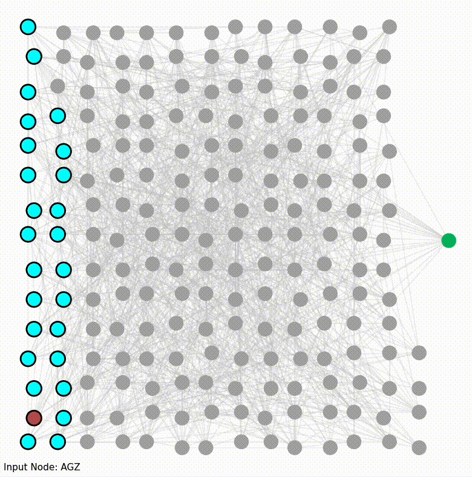

Past Projects
Systems Modeling Kernel Link
This Python package is used for traversing constraint hypergraphs, allowing systems to be simulated autonomously. The constraint hypergraph represents the system (and all models of it), and ConstraintHg provides pathfinding methods for transforming inputs to outputs. This allows a modeler to treat the model as a pure black box, able to transform any inputs to any desired output, facilitating an immediate interrogative approach to working with system representations. There's lots more information following the link.


Digital Twin of a Microgrid Link
The microgrid has been modeled by nearly a dozen modelers since 2016, many in connection with the US Navy and the Naval Postgraduate School (NPS). I used constraint hypergraphs to turn it into a declarative, functional model, integrating bits and pieces of models previously written in MATLAB, Python, and MS Excel. The result demonstrated ConstraintHg's ability to represent digital twins.